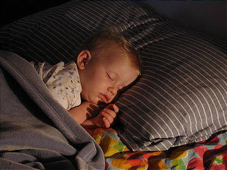
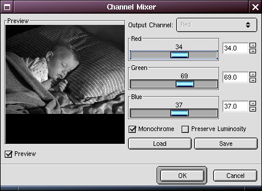
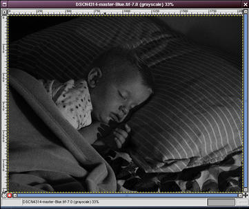
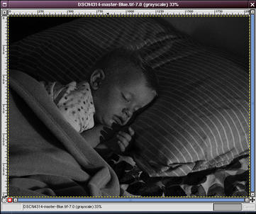
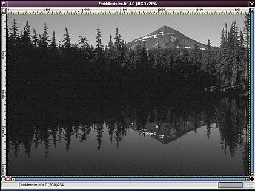
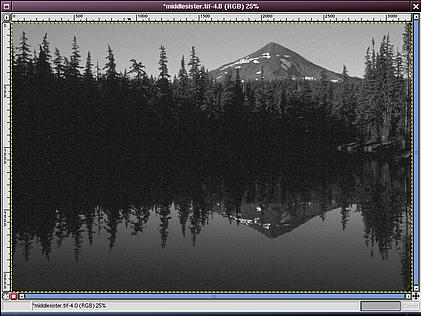

Text and images Copyright (C) 2002 Eric R. Jeschke and may not be used without permission of the author.


In this tutorial I'll show you a better way to convert color RGB images to B&W images. The basic technique is to use the Channel Mixer plug-in rather than the more conventional mode change to grayscale or color desaturation. Giving credit where credit is due: I did not come up with this method. I adapted it for The GIMP from a Photoshop tutorial on the luminous-landscape.com web site (great photography web site BTW; I recommend it).
Note: the channel mixer plug-in was not distributed with the version of the GIMP I got (ver 1.2.1). I don't know whether it comes bundled with newer versions. I downloaded it from the GIMP Plug-in Registry and compiled it myself.

Here is the original example image, loaded into The GIMP. I thought it might look nice as a black and white image.

Here is what I get if I use the standard mode change: right-click and select <Image>Image->Mode->Grayscale. It looks kind of flat. I could try to tweak the result with curves, I suppose.

Here is what I get if I use desaturate instead: right-click and select <Image>Image->Colors->Desaturate.
If anything, this one looks a little worse.
Note: A mode change to grayscale is not the same as desaturation! More on this in the Tips section below.

Try the channel mixer! Right-click on the original image and select <Image>Filters->Color->Channel Mixer. You'll get a dialog box like the one at right. Click the checkbox that says Monochrome. Make sure the preview checkbox is also checked. You can experiment with the "Preserve Luminosity" checkbox.
Now play around with the levels of the three channels, seeing the results in the preview window. Ideally, the three values should add up to 100%, but use whatever works for you...

When you have something you like, click OK. The image one on the left is the standard grayscale conversion. The one on the right was created with channel mixer.

 

- I find it helpful to have the conventional grayscale conversion in another window for comparison purposes. Duplicate the original image (<Image>Image->Duplicate or Ctrl+D) and convert the duplicate to grayscale using <Image>Image->Mode->Grayscale. Then go back and run the channel mixer on the original image.
- Sometimes it's helpful to see the individual RGB channels before you start mixing, because you can better visualize what you are mixing. To examine them, right click on the original image and select <Image>Image->Mode->Decompose. Make sure that RGB is checked in the decompose dialog box.
- It was rather shocking to me to discover that converting to grayscale (<Image>Image->Mode->Grayscale) and desaturating (<Image>Image->Colors->Desaturate) are not the same as far as their effect on the RGB channel ratio! Using the channel mixer as an example, try a setting of RED=60%, GREEN=30% and BLUE=10%. This is approximately what the grayscale mode change does. On the other hand, a mix of RED=34%, GREEN=33% and BLUE=33% is approximately what desaturation does.
 

The original tutorial (possibly with updated information) may be found here.